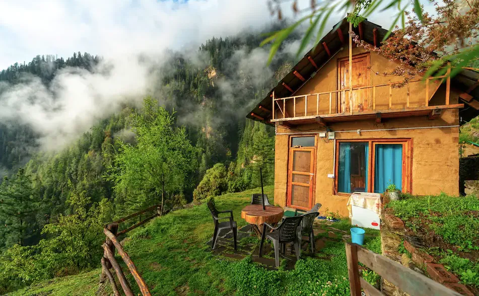

Tourism
Environmental sustainability is a critical issue in India's tourism industry, given the country's rich
biodiversity and cultural heritage. Here are several solutions to promote sustainable tourism practices and
mitigate environmental impacts:
1.Eco-friendly Infrastructure Development: Solution: Encourage the development of eco-lodges, green hotels, and sustainable resorts that minimize resource consumption and reduce carbon footprint. Implementation: Provide incentives and subsidies for developers who adopt green building practices, utilize renewable energy sources (such as solar or wind power), and implement water-saving technologies. Certify eco-friendly accommodations to attract environmentally conscious tourists.
2.Waste Management and Recycling: Solution: Implement effective waste management systems at tourist sites and accommodations to reduce littering and promote recycling. Implementation: Install recycling bins and composting facilities, educate visitors and locals about waste separation practices, and collaborate with local municipalities to ensure proper waste disposal and recycling.
3.Protection of Natural Habitats: Solution: Establish and enforce regulations to protect sensitive ecosystems and wildlife habitats from overdevelopment and pollution. Implementation: Designate and manage protected areas, enforce zoning regulations to control construction near natural attractions, and conduct regular environmental impact assessments for tourism projects. Involve local communities in conservation efforts to garner their support and participation.
4.Promotion of Sustainable Transportation: Solution: Encourage the use of eco-friendly transportation modes such as electric vehicles, bicycles, and public transit among tourists and locals. Implementation: Develop bike-sharing programs, designate car-free zones in tourist areas, and promote the use of hybrid or electric vehicles for tours and transport services. Introduce incentives for tour operators who adopt sustainable transportation practices.
5.Cultural and Community Engagement: Solution: Promote responsible tourism practices that respect local cultures, traditions, and community livelihoods. Implementation: Support community-based tourism initiatives that empower local communities through tourism-related enterprises (e.g., homestays, artisan workshops). Offer cultural sensitivity training to tourism professionals and educate visitors on local customs and etiquette.
6.Education and Awareness Campaigns:
Solution: Raise awareness among tourists, local communities, and stakeholders about the importance of
environmental conservation and sustainable tourism practices.
Implementation: Launch educational campaigns through digital platforms, visitor centers, and schools.
Organize eco-tours and nature walks that highlight conservation efforts and promote appreciation for natural
and cultural heritage.
